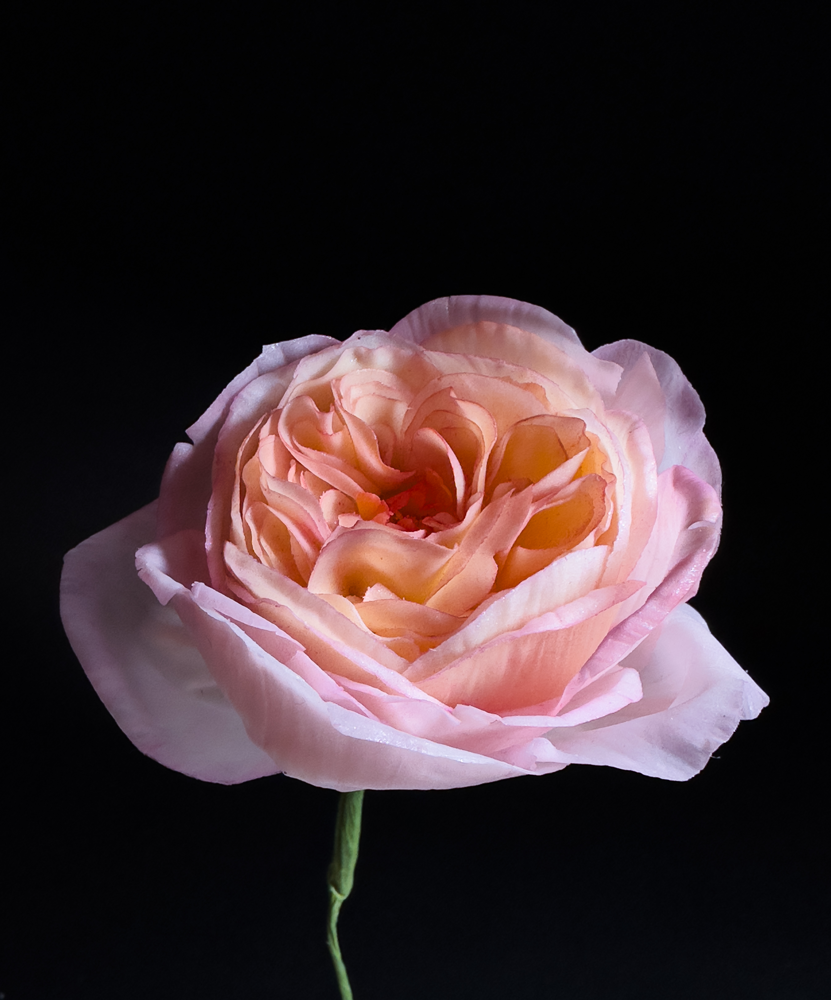
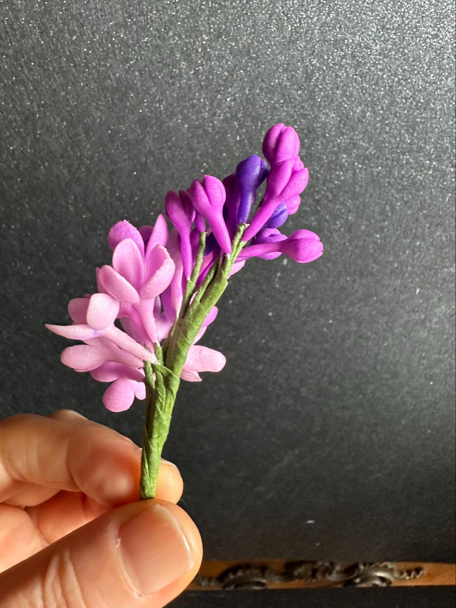
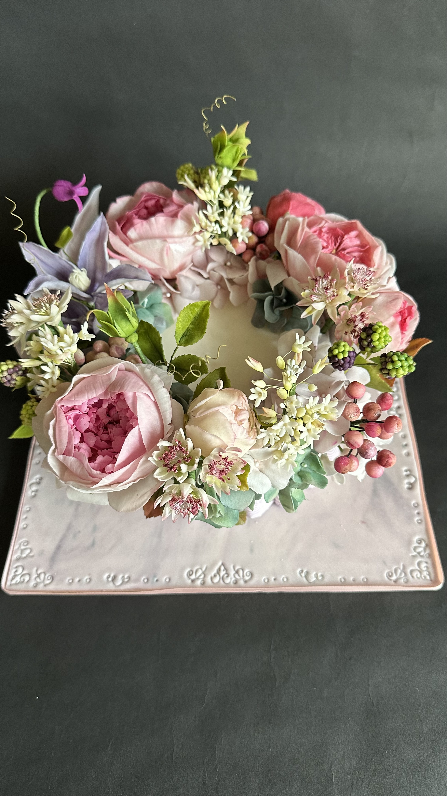

花びらの重なりが生む、完璧なロゼット
イングリッシュローズのロゼット構造を徹底的に追求する。シュガーフラワー上級者のための深い学び。
イングリッシュローズの特徴は、中心から外に向かって螺旋状に広がるロゼット構造にあります。花びらの枚数・角度・カーブ・重なり順序のすべてに意図があります。この法則を理解し、自分の手で再現できたとき、シュガーフラワーの表現力は新しい段階に入ります。
ローズの中心となるコアはスパイラル状の小さな塊から始まります。最初の数枚の内側花びらをコアに巻き付けながら、バッドの形を完成させます。この「芯の形成」段階が、最終的なロゼット構造の美しさを左右する最初の重要工程です。
中心から外に向かって花びらを一枚一枚配置していきます。各花びらの高さ・角度・幅が計算されており、完成したときに真上から見ると完全なロゼット（薔薇窓のような円形模様）が現れます。この工程は集中力と忍耐力が求められますが、最も達成感の大きい瞬間でもあります。
最外層の花びらは開き気味に広げ、イングリッシュローズ特有の「満開の表情」を作ります。ダスティングでは中心に深い色を置き、外に向かって薄くグラデーションをつけることで、三次元的な奥行きと光の当たり具合を演出します。


